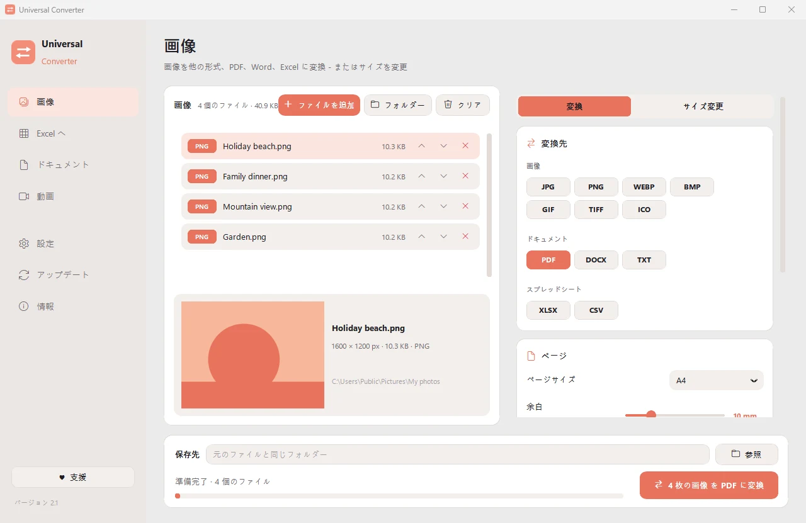
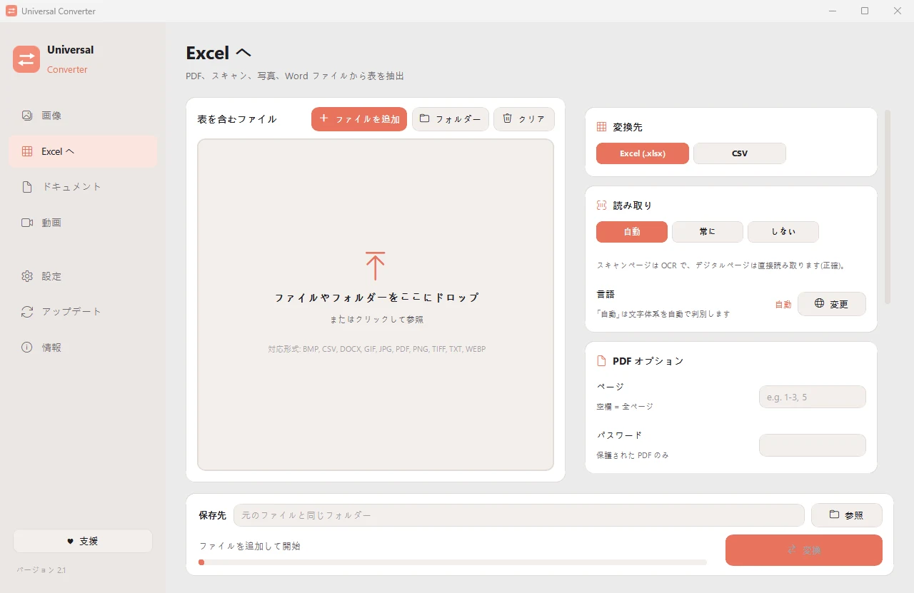
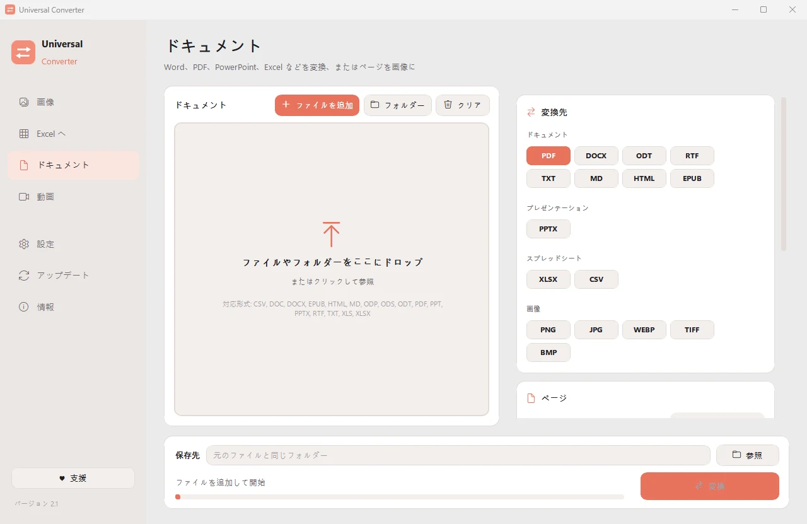
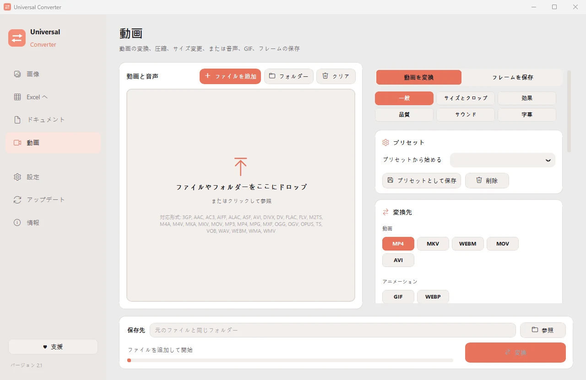

ファイルの変換を、自分の端末で
画像、ドキュメント、動画と音声、PDF、表の Excel 化まで、ひとつのアプリで。何もアップロードしません。ファイルが端末の外に出ることはありません。
インストールと更新の方法
- ダウンロードした .dmg を開き、Universal Converter を「アプリケーション」にドラッグします。
- アプリを開きます。初回は Apple の署名がないため macOS にブロックされるので、「完了」をクリックします。
- 「システム設定」>「プライバシーとセキュリティ」を開いて下にスクロールし、「このまま開く」をクリックしてパスワードを入力します。これは最初の 1 回だけです。
更新：初回起動時に許可すると、起動のたびに新しいバージョンを確認し、デジタル署名を検証して、選んだタイミングでインストールします。
インストールと更新の方法
- スマートフォンで「Android 版をダウンロード」をタップします。
- ダウンロードしたファイルを開きます。Android に求められたら、ブラウザーまたはファイル管理アプリにアプリのインストールを許可します。
- 「インストール」をタップします。
更新：アプリは 1 日に 1 回ほど確認し、新しいバージョンがあるとお知らせします。同じ方法でダウンロードして上書きインストールすれば、設定はそのまま残ります。

プライベート
すべて端末上で処理します。アップロードも順番待ちも、サイズ制限もありません。
無料
無料で使えて、広告なし、アカウント不要、透かしも入りません。
10 言語
日本語、英語、ギリシャ語、スペイン語、イタリア語、ドイツ語、フランス語、ポルトガル語、中国語、韓国語。
ひとつのウィンドウに 4 つのツール
画像
JPG、PNG、WEBP、TIFF、BMP、GIF、ICO の間で変換。ピクセル、パーセント、ファイルサイズでのサイズ変更、画像をまとめて PDF や Word にする、画像内の文字を読み取る（OCR）こともできます。

Excel へ
PDF、スキャン、写真の表を Excel や CSV に取り出します。銀行の明細、請求書、価格表など。日本語、英語、ギリシャ語など 30 以上の言語を読み取ります。

ドキュメント
PDF、Word、ODT、RTF、TXT、Markdown、HTML、EPUB、PowerPoint、Excel の間で変換。ページを画像にしたり、複数のファイルを 1 つの PDF にまとめたりできます。フォント、サイズ、色はそのまま。

動画
AV1、H.265、H.264、VP9 で動画を MP4、MKV、WebM、MOV、AVI に変換・圧縮。トリミング、切り抜き、回転、サイズ変更、GIF 作成、フレームを画像として保存、音声だけを MP3、M4A、FLAC、WAV、OGG、Opus で保存することもできます。 Android 版：H.264 または H.265 の MP4 / MKV、トリミング、切り抜き、回転、フレームの保存、音声だけを M4A で保存。
- 可能なときは動画にグラフィックカードを使います。通常 5〜20 倍速くなります。
- フォルダーごとドラッグ：すべてのファイルを一度に変換します。
- 新しいバージョンをお知らせします。Windows と Mac ではデジタル署名で検証したうえでインストールもできます。
- 端末に合わせたライト / ダークの外観。
使い方
- Universal Converter を開き、左側で画像 · Excel へ · ドキュメント · 動画を選びます。
- ファイルやフォルダーをウィンドウにドラッグするか、「ファイルを追加」をクリックします。
- 「変換」をクリックします。新しいファイルは元のファイルの隣か、選んだフォルダーに保存されます。
できること
- アップロードせずに動画を圧縮
- MP4、MKV、WebM、MOV、AVI の間で動画を変換
- 動画の音声を MP3 で保存
- 動画から GIF を作る
- PDF の表を Excel に取り出す
- 写真を 1 つの PDF にまとめる
- PDF を Word に変換
- 複数のファイルを 1 つの PDF にまとめる
- 画像の文字をコピー（OCR）
- JPG、PNG、WEBP などの間で画像を変換
- 画像のサイズ変更・ファイルサイズへの縮小
- 銀行の取引明細 PDF を Excel に変換
- PDF の請求書から表を Excel に抽出
- スキャンした文書を編集できる Word に変換
- PDF のページを JPG 画像に変換
- Word 文書を PDF に変換
よくある質問
本当に無料ですか？
はい。Universal Converter は無料で使え、広告もアカウントも期限もありません。役に立ったら、任意の支援で開発を応援できますが、必要はまったくありません。
ファイルはどこかにアップロードされますか？
いいえ。変換はすべてご自身の端末で行うため、インターネットに接続していなくても使えます。アプリがネットにつながるのは、更新の確認、選んだ追加言語のダウンロード、そして許可した場合の匿名エラーレポートの送信だけです。
Windows で SmartScreen の警告が出ます。大丈夫ですか？
はい。インストーラーにまだコード署名がないため、Windows が認識できません。「詳細情報」を選び、「実行」をクリックしてください。その後の更新はアプリ自身がデジタル署名で検証します。 または、警告の出ない Microsoft Store からインストールすることもできます。
Mac ではどう開きますか？
ダウンロードしたファイルを開き、Universal Converter を「アプリケーション」にドラッグします。Apple の署名がないため、最初は macOS がブロックします。「システム設定」>「プライバシーとセキュリティ」を開き、「このまま開く」をクリックしてください。一度だけで済みます。
Android にはどうインストールしますか？
スマートフォンで APK をダウンロードして開き、確認が出たらインストールを許可してください（Android 10 以降）。英語とギリシャ語は内蔵されており、ほかの言語はアプリの「設定」でダウンロードできます。新しいバージョンがあるとアプリがお知らせします。
対応言語は？
アプリは日本語、英語、ギリシャ語、スペイン語、イタリア語、ドイツ語、フランス語、ポルトガル語、中国語、韓国語に対応しています。インストール時、または後から「設定」で選べます。
Universal Converter を支援する
Universal Converter は一人で開発しており、これからも無料です。時間の節約になったら、任意の支援が開発の継続を助けます。お支払いは PayPal または Revolut で行われ、アプリが支払い情報を目にすることはありません。 ご支援は、コード署名証明書と Apple の開発者アカウントの費用に充てられ、Windows と Mac でインストール時の警告が表示されなくなります。ご支援は税控除の対象になりません。